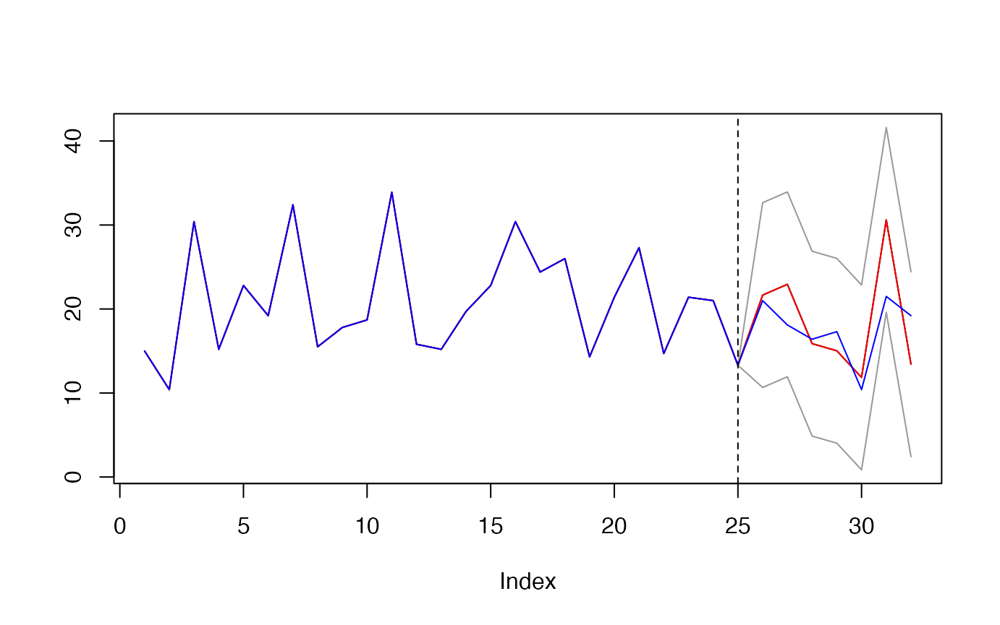
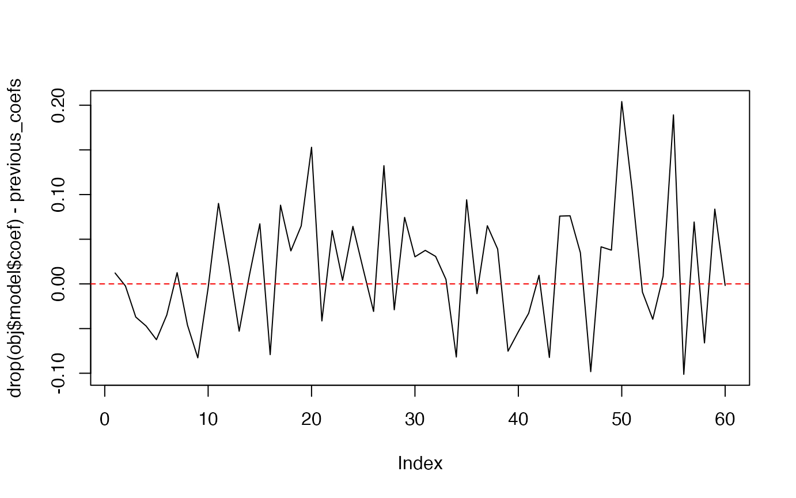
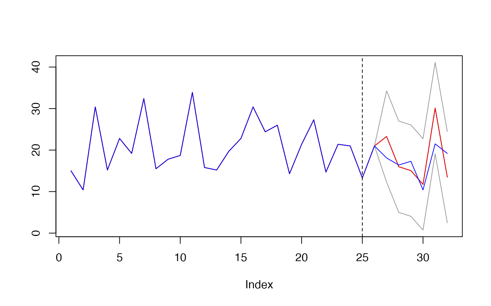
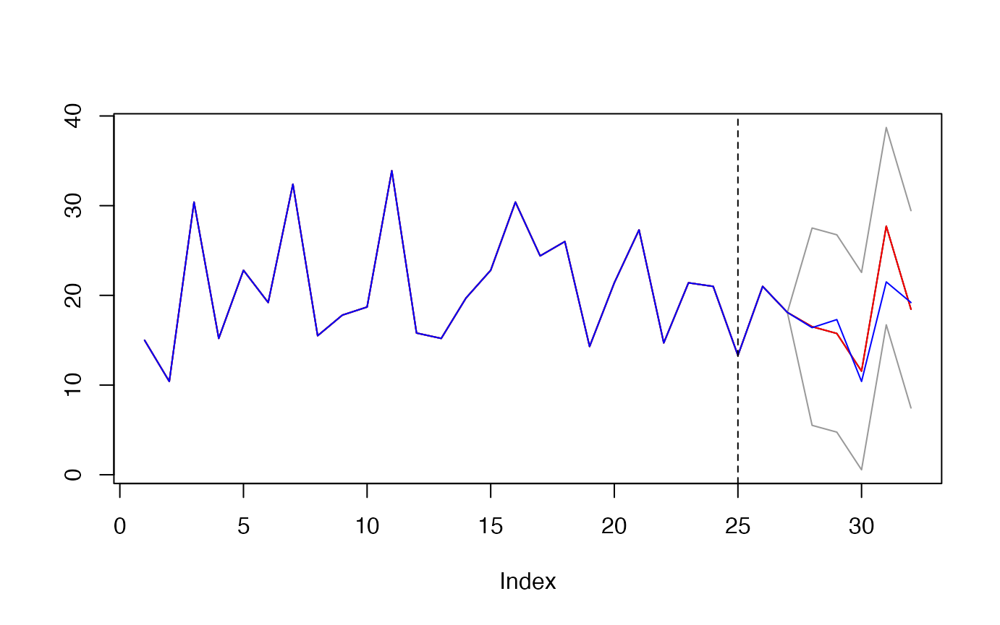
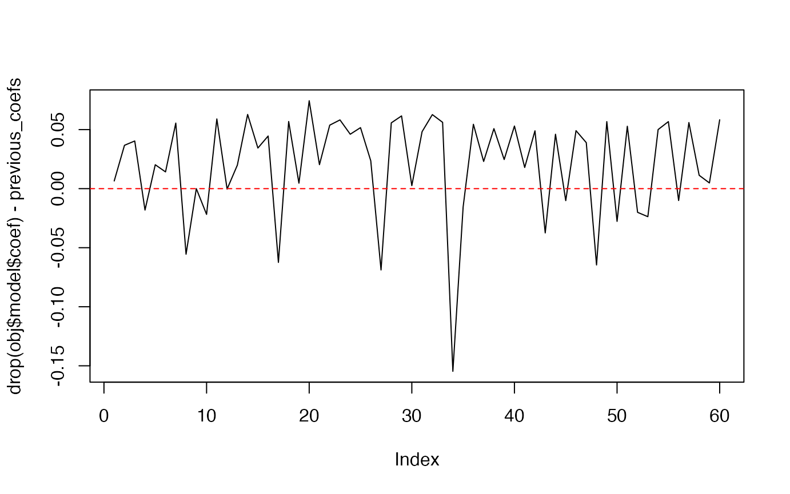
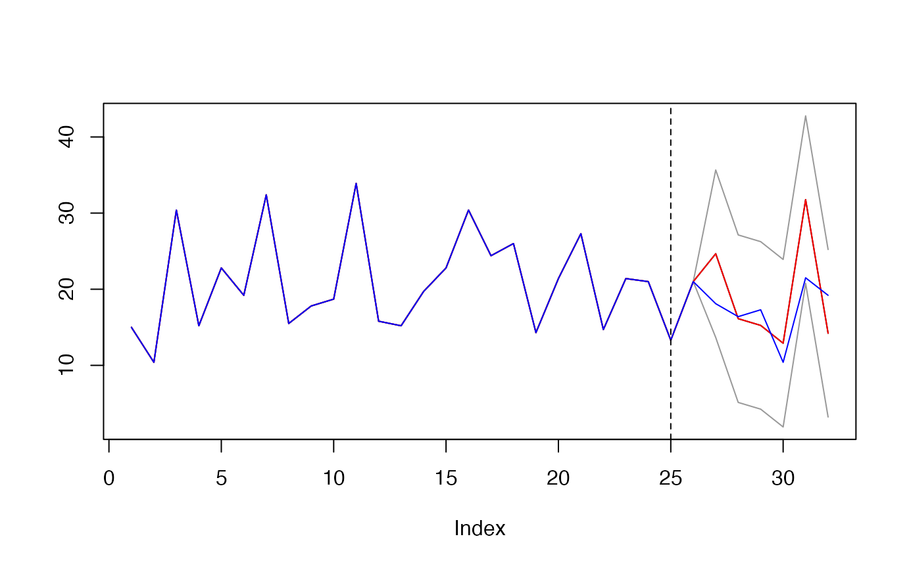

Getting updates
getting-updates.Rmd0 - Packages and data
library(learningmachine)## Loading required package: randtoolbox## Loading required package: rngWELL## This is randtoolbox. For an overview, type 'help("randtoolbox")'.## Loading required package: tseries## Registered S3 method overwritten by 'quantmod':
## method from
## as.zoo.data.frame zoo## Loading required package: memoise## Loading required package: foreach## Loading required package: skimr## Loading required package: snow## Loading required package: doSNOW## Loading required package: iterators## Loading required package: ggplot2## Loading required package: lattice
library(mlbench)
library(palmerpenguins)
X <- as.matrix(mtcars[,-1])
y <- mtcars$mpg
set.seed(123)
(index_train <- base::sample.int(n = nrow(X),
size = floor(0.8*nrow(X)),
replace = FALSE))## [1] 31 15 19 14 3 10 18 22 11 5 20 29 23 30 9 28 8 27 7 32 26 17 4 1 24
X_train <- X[index_train, ]
y_train <- y[index_train]
X_test <- X[-index_train, ]
y_test <- y[-index_train]
dim(X_train)## [1] 25 10
dim(X_test)## [1] 7 101 - RVFL regression updates
obj <- learningmachine::Regressor$new(method = "rvfl",
nb_hidden = 50L,
pi_method = "splitconformal")
obj$get_type()## [1] "regression"
obj$get_name()## [1] "Regressor"
t0 <- proc.time()[3]
obj$fit(X_train, y_train, reg_lambda = 0.01)
cat("Elapsed: ", proc.time()[3] - t0, "s \n")## Elapsed: 1.762 s
print(obj$predict(X_test))## $preds
## Mazda RX4 Wag Valiant Merc 450SE Merc 450SL
## 21.65449 22.93687 15.87428 15.02294
## Lincoln Continental Toyota Corona Pontiac Firebird
## 11.85602 30.61269 13.41956
##
## $lower
## Mazda RX4 Wag Valiant Merc 450SE Merc 450SL
## 10.6544910 11.9368684 4.8742829 4.0229365
## Lincoln Continental Toyota Corona Pontiac Firebird
## 0.8560243 19.6126863 2.4195568
##
## $upper
## Mazda RX4 Wag Valiant Merc 450SE Merc 450SL
## 32.65449 33.93687 26.87428 26.02294
## Lincoln Continental Toyota Corona Pontiac Firebird
## 22.85602 41.61269 24.41956
obj$summary(X_test, y=y_test, show_progress=FALSE)## $R_squared
## [1] -0.7840207
##
## $R_squared_adj
## [1] 3.676031
##
## $Residuals
## Min. 1st Qu. Median Mean 3rd Qu. Max.
## -9.1127 -3.1464 -0.6545 -1.0681 1.4014 5.7804
##
## $Coverage_rate
## [1] 100
##
## $citests
## estimate lower upper p-value signif
## cyl -119.0669508 -180.926164 -57.2077378 0.0032924683 **
## disp -1.8682022 -3.317442 -0.4189628 0.0197070983 *
## hp 0.2475173 -2.457524 2.9525591 0.8302658597
## drat 765.8271469 432.109214 1099.5450799 0.0013616361 **
## wt 192.2312109 106.387749 278.0746728 0.0015442426 **
## qsec 164.3760278 47.849385 280.9026706 0.0136048574 *
## vs -226.3762189 -303.013774 -149.7386635 0.0003557495 ***
## am -304.1346936 -656.243320 47.9739327 0.0789869231 .
## gear 31.5146345 -116.625580 179.6548493 0.6213269360
## carb -188.4412677 -271.089233 -105.7933019 0.0014077501 **
##
## $effects
## ── Data Summary ────────────────────────
## Values
## Name effects
## Number of rows 7
## Number of columns 10
## _______________________
## Column type frequency:
## numeric 10
## ________________________
## Group variables None
##
## ── Variable type: numeric ──────────────────────────────────────────────────────
## skim_variable mean sd p0 p25 p50 p75 p100
## 1 cyl -119. 66.9 -211. -152. -140. -82.1 -15.1
## 2 disp -1.87 1.57 -4.02 -2.75 -2.28 -0.972 0.657
## 3 hp 0.248 2.92 -5.33 -0.745 0.853 2.45 2.80
## 4 drat 766. 361. 51.7 673. 885. 1000. 1079.
## 5 wt 192. 92.8 93.9 131. 162. 234. 361.
## 6 qsec 164. 126. -10.5 91.4 148. 242. 346.
## 7 vs -226. 82.9 -355. -274. -218. -163. -138.
## 8 am -304. 381. -614. -526. -348. -309. 505.
## 9 gear 31.5 160. -168. -58.0 -6.65 107. 298.
## 10 carb -188. 89.4 -331. -225. -171. -155. -58.5
## hist
## 1 ▂▇▂▁▅
## 2 ▂▇▂▂▂
## 3 ▂▁▂▅▇
## 4 ▂▁▂▂▇
## 5 ▇▇▃▃▃
## 6 ▇▃▇▁▇
## 7 ▅▁▂▂▇
## 8 ▇▇▁▁▂
## 9 ▇▇▃▃▃
## 10 ▇▁▇▇▃## Elapsed: 0.044 s
obj$set_level(95)
res <- obj$predict(X = X_test)
plot(c(y_train, res$preds), type='l',
main="",
ylab="",
ylim = c(min(c(res$upper, res$lower, y)),
max(c(res$upper, res$lower, y))))
lines(c(y_train, res$upper), col="gray60")
lines(c(y_train, res$lower), col="gray60")
lines(c(y_train, res$preds), col = "red")
lines(c(y_train, y_test), col = "blue")
abline(v = length(y_train), lty=2, col="black")
mean((y_test >= as.numeric(res$lower)) * (y_test <= as.numeric(res$upper)))## [1] 1update RVFL model
previous_coefs <- drop(obj$model$coef)
newx <- X_test[1, ]
newy <- y_test[1]
new_X_test <- X_test[-1, ]
new_y_test <- y_test[-1]
t0 <- proc.time()[3]
obj$update(newx, newy)
cat("Elapsed: ", proc.time()[3] - t0, "s \n")## Elapsed: 0.004 s
summary(previous_coefs)## Min. 1st Qu. Median Mean 3rd Qu. Max.
## -1.67774 -0.26776 0.03546 0.02185 0.39295 1.69575## Min. 1st Qu. Median Mean 3rd Qu. Max.
## -0.10122 -0.03770 0.01117 0.01573 0.06498 0.20409
obj$summary(new_X_test, y=new_y_test, show_progress=FALSE)## $R_squared
## [1] -1.005717
##
## $R_squared_adj
## [1] 3.005717
##
## $Residuals
## Min. 1st Qu. Median Mean 3rd Qu. Max.
## -8.6246 -4.2170 -0.4694 -1.1311 1.7834 5.7087
##
## $Coverage_rate
## [1] 100
##
## $citests
## estimate lower upper p-value signif
## cyl -84.8841225 -137.123316 -32.6449294 0.0086803278 **
## disp -1.8544960 -3.486573 -0.2224188 0.0329792685 *
## hp -0.3709963 -3.620652 2.8786590 0.7809537342
## drat 672.4397479 264.248009 1080.6314872 0.0082113434 **
## wt 174.8520694 101.409738 248.2944012 0.0016891939 **
## qsec 160.2302320 -1.104187 321.5646509 0.0510800616 .
## vs -237.2254300 -325.307655 -149.1432046 0.0009644739 ***
## am -435.3518879 -563.116618 -307.5871580 0.0003215033 ***
## gear 52.8485871 -129.772071 235.4692457 0.4903957253
## carb -210.5250604 -304.050420 -116.9997007 0.0021699932 **
##
## $effects
## ── Data Summary ────────────────────────
## Values
## Name effects
## Number of rows 6
## Number of columns 10
## _______________________
## Column type frequency:
## numeric 10
## ________________________
## Group variables None
##
## ── Variable type: numeric ──────────────────────────────────────────────────────
## skim_variable mean sd p0 p25 p50 p75 p100
## 1 cyl -84.9 49.8 -160. -93.8 -87.0 -77.8 -4.35
## 2 disp -1.85 1.56 -3.74 -2.82 -2.15 -0.926 0.483
## 3 hp -0.371 3.10 -5.70 -1.38 0.159 1.87 2.60
## 4 drat 672. 389. 21.8 525. 721. 970. 1058.
## 5 wt 175. 70.0 69.6 145. 173. 209. 276.
## 6 qsec 160. 154. -21.4 56.8 129. 278. 364.
## 7 vs -237. 83.9 -336. -309. -233. -169. -139.
## 8 am -435. 122. -652. -471. -397. -360. -321.
## 9 gear 52.8 174. -120. -63.9 34.3 83.7 365.
## 10 carb -211. 89.1 -354. -252. -185. -167. -103.
## hist
## 1 ▂▁▇▁▂
## 2 ▇▃▃▃▃
## 3 ▃▁▃▇▇
## 4 ▃▁▃▇▇
## 5 ▃▃▇▃▃
## 6 ▇▃▃▁▇
## 7 ▇▃▁▃▇
## 8 ▃▁▃▇▇
## 9 ▇▇▃▁▃
## 10 ▂▂▁▇▂
res <- obj$predict(X = new_X_test)
new_y_train <- c(y_train, newy)
plot(c(new_y_train, res$preds), type='l',
main="",
ylab="",
ylim = c(min(c(res$upper, res$lower, y)),
max(c(res$upper, res$lower, y))))
lines(c(new_y_train, res$upper), col="gray60")
lines(c(new_y_train, res$lower), col="gray60")
lines(c(new_y_train, res$preds), col = "red")
lines(c(new_y_train, new_y_test), col = "blue")
abline(v = length(y_train), lty=2, col="black")
mean((new_y_test >= as.numeric(res$lower)) * (new_y_test <= as.numeric(res$upper)))## [1] 1update RVFL model (Pt.2)
newx <- X_test[2, ]
newy <- y_test[2]
new_X_test <- X_test[-c(1, 2), ]
new_y_test <- y_test[-c(1, 2)]## Elapsed: 0.004 s
obj$summary(new_X_test, y=new_y_test, show_progress=FALSE)## $R_squared
## [1] 0.3777726
##
## $R_squared_adj
## [1] 1.414818
##
## $Residuals
## Min. 1st Qu. Median Mean 3rd Qu. Max.
## -6.2196 -1.1526 -0.1093 -1.0356 0.7558 1.5477
##
## $Coverage_rate
## [1] 100
##
## $citests
## estimate lower upper p-value signif
## cyl -66.76203 -115.010766 -18.5132895 0.018431466 *
## disp 0.68217 -1.213906 2.5782465 0.374369676
## hp -3.94151 -7.648378 -0.2346413 0.041878020 *
## drat 948.44615 576.695322 1320.1969685 0.002096743 **
## wt 55.01586 -39.817801 149.8495183 0.182534541
## qsec -78.36447 -312.036258 155.3073154 0.404503560
## vs -155.62212 -275.565235 -35.6790064 0.022710722 *
## am -866.80927 -1292.861113 -440.7574169 0.004837859 **
## gear -33.90991 -183.737703 115.9178756 0.563849264
## carb -252.14976 -385.629419 -118.6700930 0.006319360 **
##
## $effects
## ── Data Summary ────────────────────────
## Values
## Name effects
## Number of rows 5
## Number of columns 10
## _______________________
## Column type frequency:
## numeric 10
## ________________________
## Group variables None
##
## ── Variable type: numeric ──────────────────────────────────────────────────────
## skim_variable mean sd p0 p25 p50 p75 p100
## 1 cyl -66.8 38.9 -106. -87.3 -84.7 -47.0 -8.74
## 2 disp 0.682 1.53 -1.22 -0.684 1.52 1.62 2.18
## 3 hp -3.94 2.99 -7.55 -5.45 -5.02 -0.883 -0.806
## 4 drat 948. 299. 484. 895. 946. 1164. 1254.
## 5 wt 55.0 76.4 -70.3 38.8 80.8 112. 114.
## 6 qsec -78.4 188. -274. -207. -68.9 -57.3 215.
## 7 vs -156. 96.6 -284. -231. -110. -92.3 -60.7
## 8 am -867. 343. -1374. -903. -830. -816. -411.
## 9 gear -33.9 121. -231. -35.6 -11.9 13.2 95.5
## 10 carb -252. 108. -369. -364. -214. -170. -143.
## hist
## 1 ▇▃▁▃▃
## 2 ▅▁▁▁▇
## 3 ▃▇▁▁▇
## 4 ▃▁▃▃▇
## 5 ▂▁▂▁▇
## 6 ▇▁▇▁▃
## 7 ▃▃▁▃▇
## 8 ▂▁▇▁▂
## 9 ▃▁▃▇▃
## 10 ▇▁▁▃▇
res <- obj$predict(X = new_X_test)
new_y_train <- c(y_train, y_test[c(1, 2)])
plot(c(new_y_train, res$preds), type='l',
main="",
ylab="",
ylim = c(min(c(res$upper, res$lower, y)),
max(c(res$upper, res$lower, y))))
lines(c(new_y_train, res$upper), col="gray60")
lines(c(new_y_train, res$lower), col="gray60")
lines(c(new_y_train, res$preds), col = "red")
lines(c(new_y_train, new_y_test), col = "blue")
abline(v = length(y_train), lty=2, col="black")
mean((new_y_test >= as.numeric(res$lower)) * (new_y_test <= as.numeric(res$upper)))## [1] 12 - update RVFL model using Polyak averaging
obj <- learningmachine::Regressor$new(method = "rvfl",
nb_hidden = 50L,
pi_method = "splitconformal")
obj$get_type()## [1] "regression"
obj$get_name()## [1] "Regressor"
t0 <- proc.time()[3]
obj$fit(X_train, y_train, reg_lambda = 0.01)
cat("Elapsed: ", proc.time()[3] - t0, "s \n")## Elapsed: 0.016 s
previous_coefs <- drop(obj$model$coef)
newx <- X_test[1, ]
newy <- y_test[1]
new_X_test <- X_test[-1, ]
new_y_test <- y_test[-1]
t0 <- proc.time()[3]
obj$update(newx, newy, method = "polyak", alpha = 0.6)
cat("Elapsed: ", proc.time()[3] - t0, "s \n")## Elapsed: 0.013 s
summary(previous_coefs)## Min. 1st Qu. Median Mean 3rd Qu. Max.
## -1.67774 -0.26776 0.03546 0.02185 0.39295 1.69575## Min. 1st Qu. Median Mean 3rd Qu. Max.
## -1.547e-01 -9.312e-05 3.555e-02 2.056e-02 5.395e-02 7.444e-02
obj$summary(new_X_test, y=new_y_test, show_progress=FALSE)## $R_squared
## [1] -1.622994
##
## $R_squared_adj
## [1] 3.622994
##
## $Residuals
## Min. 1st Qu. Median Mean 3rd Qu. Max.
## -10.275 -5.550 -1.121 -2.008 1.605 4.984
##
## $Coverage_rate
## [1] 100
##
## $citests
## estimate lower upper p-value signif
## cyl -125.87020894 -180.771353 -70.96906459 0.0019998995 **
## disp -1.50344852 -3.048166 0.04126932 0.0543632798 .
## hp 0.01084711 -3.306115 3.32780878 0.9936179132
## drat 688.08905715 282.151278 1094.02683595 0.0073088590 **
## wt 171.89295849 101.420353 242.36556410 0.0015147024 **
## qsec 171.69932307 18.043234 325.35541236 0.0348951343 *
## vs -166.37364317 -274.090223 -58.65706306 0.0106320189 *
## am -498.70714945 -623.737761 -373.67653808 0.0001516098 ***
## gear -5.39160626 -176.169956 165.38674327 0.9384668564
## carb -211.25367163 -306.219314 -116.28802974 0.0022868550 **
##
## $effects
## ── Data Summary ────────────────────────
## Values
## Name effects
## Number of rows 6
## Number of columns 10
## _______________________
## Column type frequency:
## numeric 10
## ________________________
## Group variables None
##
## ── Variable type: numeric ──────────────────────────────────────────────────────
## skim_variable mean sd p0 p25 p50 p75 p100
## 1 cyl -126. 52.3 -200. -136. -131. -122. -36.9
## 2 disp -1.50 1.47 -3.36 -2.38 -1.78 -0.563 0.630
## 3 hp 0.0108 3.16 -5.48 -0.901 0.427 2.38 3.01
## 4 drat 688. 387. 24.3 570. 736. 971. 1068.
## 5 wt 172. 67.2 67.2 146. 175. 203. 266.
## 6 qsec 172. 146. -9.11 73.5 151. 279. 368.
## 7 vs -166. 103. -287. -244. -180. -79.4 -40.3
## 8 am -499. 119. -707. -528. -489. -410. -382.
## 9 gear -5.39 163. -160. -102. -37.3 11.9 298.
## 10 carb -211. 90.5 -356. -256. -183. -170. -101.
## hist
## 1 ▃▇▇▁▃
## 2 ▃▇▃▃▃
## 3 ▃▁▃▇▇
## 4 ▃▁▃▇▇
## 5 ▃▃▇▃▃
## 6 ▇▃▃▁▇
## 7 ▇▃▃▁▇
## 8 ▃▁▇▃▇
## 9 ▇▇▃▁▃
## 10 ▂▂▁▇▂
res <- obj$predict(X = new_X_test)
new_y_train <- c(y_train, newy)
plot(c(new_y_train, res$preds), type='l',
main="",
ylab="",
ylim = c(min(c(res$upper, res$lower, y)),
max(c(res$upper, res$lower, y))))
lines(c(new_y_train, res$upper), col="gray60")
lines(c(new_y_train, res$lower), col="gray60")
lines(c(new_y_train, res$preds), col = "red")
lines(c(new_y_train, new_y_test), col = "blue")
abline(v = length(y_train), lty=2, col="black")
mean((new_y_test >= as.numeric(res$lower)) * (new_y_test <= as.numeric(res$upper)))## [1] 1update RVFL model using Polyak averaging (Pt.2)
newx <- X_test[2, ]
newy <- y_test[2]
new_X_test <- X_test[-c(1, 2), ]
new_y_test <- y_test[-c(1, 2)]
t0 <- proc.time()[3]
obj$update(newx, newy, method = "polyak", alpha = 0.9)
cat("Elapsed: ", proc.time()[3] - t0, "s \n")## Elapsed: 0.009 s
obj$summary(new_X_test, y=new_y_test, show_progress=FALSE)## $R_squared
## [1] -1.39862
##
## $R_squared_adj
## [1] 2.59908
##
## $Residuals
## Min. 1st Qu. Median Mean 3rd Qu. Max.
## 0.8925 3.5013 3.6366 4.8122 5.6748 10.3558
##
## $Coverage_rate
## [1] 100
##
## $citests
## estimate lower upper p-value signif
## cyl -167.8483740 -276.106575 -59.5901732 0.0125984485 *
## disp -1.7468768 -4.046334 0.5525802 0.1025782886
## hp 0.9489602 -4.041646 5.9395658 0.6254721191
## drat 1080.1092279 612.491620 1547.7268361 0.0030379142 **
## wt 145.1629614 27.355085 262.9708375 0.0267522161 *
## qsec -31.8368595 -230.209540 166.5358209 0.6789457890
## vs -717.8822099 -880.907320 -554.8570996 0.0002569655 ***
## am -63.9222931 -321.143283 193.2986963 0.5281528598
## gear -62.5759380 -397.144364 271.9924884 0.6309669853
## carb -128.4286368 -264.535351 7.6780776 0.0588104958 .
##
## $effects
## ── Data Summary ────────────────────────
## Values
## Name effects
## Number of rows 5
## Number of columns 10
## _______________________
## Column type frequency:
## numeric 10
## ________________________
## Group variables None
##
## ── Variable type: numeric ──────────────────────────────────────────────────────
## skim_variable mean sd p0 p25 p50 p75 p100
## 1 cyl -168. 87.2 -237. -229. -210. -132. -30.7
## 2 disp -1.75 1.85 -3.84 -3.66 -0.753 -0.515 0.0339
## 3 hp 0.949 4.02 -4.56 -0.530 0.0478 4.57 5.22
## 4 drat 1080. 377. 559. 950. 1005. 1375. 1512.
## 5 wt 145. 94.9 43.6 76.5 118. 225. 263.
## 6 qsec -31.8 160. -206. -145. -19.2 2.02 209.
## 7 vs -718. 131. -845. -783. -766. -690. -505.
## 8 am -63.9 207. -402. -78.9 -48.8 97.9 112.
## 9 gear -62.6 269. -376. -161. -95.4 -44.5 363.
## 10 carb -128. 110. -247. -243. -77.6 -66.7 -8.02
## hist
## 1 ▇▁▂▁▂
## 2 ▇▁▁▃▇
## 3 ▃▁▇▁▇
## 4 ▃▁▇▁▇
## 5 ▇▃▁▁▇
## 6 ▇▁▇▁▃
## 7 ▇▃▃▁▃
## 8 ▃▁▁▇▇
## 9 ▃▇▃▁▃
## 10 ▇▁▁▇▃
res <- obj$predict(X = new_X_test)
new_y_train <- c(y_train, y_test[c(1, 2)])
plot(c(new_y_train, res$preds), type='l',
main="",
ylab="",
ylim = c(min(c(res$upper, res$lower, y)),
max(c(res$upper, res$lower, y))))
lines(c(new_y_train, res$upper), col="gray60")
lines(c(new_y_train, res$lower), col="gray60")
lines(c(new_y_train, res$preds), col = "red")
lines(c(new_y_train, new_y_test), col = "blue")
abline(v = length(y_train), lty=2, col="black")
mean((new_y_test >= as.numeric(res$lower)) * (new_y_test <= as.numeric(res$upper)))## [1] 1